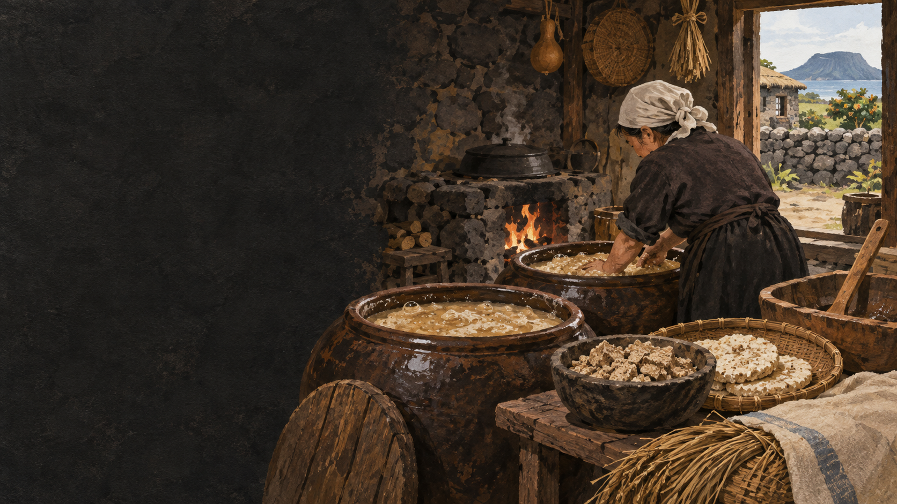

누룩
곡물 전분을 당으로, 효모가 당을 알코올로 바꾸도록 돕습니다.
 제주에서는 이 재료를
제주에서는 이 재료를
제주 음식의 생활문화를 바탕으로 제작한 기록화 · 생성 이미지
논농사가 어려운 제주에서는 차조가 밥과 떡을 넘어 술의 바탕이 되었습니다. 오메기떡을 삶아 으깬 뒤 누룩과 물을 섞으면 미생물이 전분을 당과 알코올로 바꿉니다.
오메기술은 집안 행사와 손님맞이, 공동체의 자리에 놓인 발효주였습니다. 이 술을 고소리라는 증류기에 다시 내리면 더 도수가 높은 고소리술로 이어집니다.
곡물을 준비하는 일부터 누룩이 맛을 바꾸는 시간까지 이어서 봅니다.
씻고 불린 차조를 빻습니다.
반죽을 삶아 술밑을 만듭니다.
떡을 식혀 누룩과 물을 섞습니다.
온도와 위생을 살피며 익힙니다.
그대로 마시거나 증류해 고소리술로 만듭니다.
술맛은 차조 하나가 아니라 미생물과 물, 발효 환경이 함께 만듭니다.
곡물 전분을 당으로, 효모가 당을 알코올로 바꾸도록 돕습니다.
물맛과 발효 온도는 향에 영향을 주지만 결과는 원료·누룩·관리의 합입니다.
귀한 곡물을 나누는 술은 관계를 확인하는 음식이기도 했습니다.
유명한 메뉴보다 왜 이런 재료와 방식이 제주 생활에 필요했는지를 먼저 묻습니다.
발효주와 증류주가 같은 술밑에서 어떻게 다른 길로 이어지는지 비교합니다.
곡물을 누룩과 발효
발효한 술을 증류
비교적 낮고 새콤·곡물 향
높고 맑으며 향이 응축
독·항아리
고소리 증류기
전·빙떡·돼지고기와 가볍게
기름진 고기와 소량
오메기떡은 간식만이 아니라 술을 빚기 위한 중간 단계였습니다. 같은 곡물이 끼니와 발효를 오가던 생활의 효율을 보여 줍니다.
오늘의 전통주 페어링은 정답보다 음식의 짠맛·기름기와 술의 산미·도수를 맞추는 방식으로 제안할 수 있습니다.
차조 → 오메기떡 → 발효주 → 증류주. 한 곡물이 네 장면을 잇습니다.
가정 발효는 용기 소독과 온도 관리가 필요합니다. 술 제조·판매에는 관련 법규가 적용되므로 체험은 허가된 프로그램에서 진행합니다.
지역·가정·생산자에 따라 설명과 조리법이 다를 수 있습니다. 현장 인터뷰를 인용할 때는 당사자의 사용 동의를 받습니다.